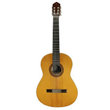
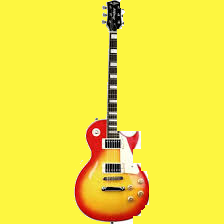
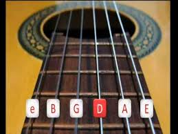

Apoie essa causa: liberdade animal

Para conhecer mais sobre a história da afinação musical,
visite esse site.
Para saber um pouco mais sobre violão, clique nele 
Para saber um pouco mais sobre guitarra, clique nela 
Para enteder a relação entre cores e sons, clique na imagem
Para começar a aprender a afinar o violão (ou guitarra), clique na imagem 